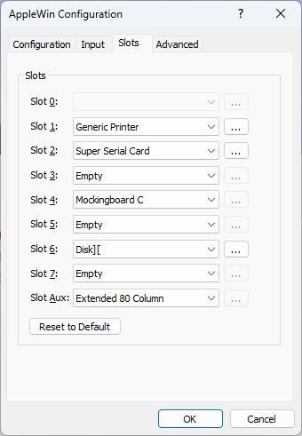

Slot Settings

Slots:
These options allow you to choose which Apple II cards are inserted in each of the slots.
Available cards for slot 0 are: (for Apple II/II Plus):
- Language Card (LC)
- Saturn 128K
Available cards for slots 1-7 are:
- Disk II
- Hard disk controller (HDC)
- Printer interface (*)
- Mouse card (*)
- Saturn 128K
- Super Serial Card (SSC) (*)
- 4Play (*)
- SNES MAX (*)
- Mockingboard C
- Phasor
- SAM (Software Automatic Mouth) - an 8-bit DAC card
- Uthernet (*)
- Uthernet II (*)
- VidHD (*)
- Microsoft CP/M SoftCard (Z80) (*)
(*) Only a single instance of these cards can be selected.
Available cards for the Apple //e's auxiliary slot are:
- 80 Column (1KiB)
- Extended 80 Column (64KiB)
- RamWorks III (configurable up to 16MiB)
Card specific options and notes:
If a card supports extra options, then an ellipsis ('...') will be enabled after the slot drop-down menu.
Disk II interface
Typically this is inserted into slot 6 (occasionally with a second in slot 5).
Extra options:
- Floppy 1-2
- Select the .dsk, .do, .po or .woz image file for this floppy disk drive.
- Swap
- Swap the floppy disk images.
- Warning! If done during image access this could result in undefined behavior (eg. Apple II program crash) or data corruption on the image.
- Show status for slots 5 & 6:
- In 2x windowed-mode, optionally show the Track and Sector values for Drives 1 and 2 (for any Disk II cards in slots 5 and/or 6). Hovering over this status will show a tooltip with both decimal and hexadecimal values, and the track includes the full fractional quarter track value too.
Hard disk controller
Typically this is inserted into slot 7 (occasionally with a second in slot 5).
Extra options:
- HDD 1-8
- Select the .hdv, 2mg or .po image file for this hard disk drive.
- Swap 1 and 2
- Swap the hard disk images.
- Warning! If done during image access this could result in undefined behavior (eg. Apple II program crash) or data corruption on the image.
Printer interface
Typically this is inserted into slot 1.
Extra options:
- Printer dump filename:
- Data sent to the printer is stored in a text file.
Use this setting to select its location.
- Dump to printer:
- Use with caution!
- Enables dumping to a real printer. If
disabled, the printout is stored only in printer.txt file in the AppleWin folder.
It's recommended to use a printer compatible with the printer selected in the Apple II applications.
With modern printers trying to print images will result in printing tens of
pages of nonsense. Requires command line switch -use-real-printer.
- Encoding conversion for clones:
- Characters are encoded from the character set used in
the real hardware to ASCII. For Pravets 8 this converts MIK to ASCII.
Enabling this could cause problems when printing images.
- Filter unprintable characters:
- Some characters represent commands for the printer and
shall not be printed. When saving them to the printer dump file they
may appear as some strange symbols. (You will want to disable filtering
when dumping to a real printer.)
- Append to print-file:
- When disabled, the previous print file is replaced (unless it has a
different name) by the newly created print file. Otherwise the newly
printed data is added to the existing print file. (You will want to
disable appending when dumping to a real printer.)
Terminate printing after idle:
When printing is started, a printer file is created and it is
closed either after the specified time expires, or when
the emulator is reset. This setting is emulation speed dependent.
Mouse card:
Typically this is inserted into slot 4.
Disables joystick emulation with mouse.
Extra options:
- Show cross-hairs in window's frame:
- Configure whether you want cross-hairs or not
- Restrict mouse to Apple window:
- Restricting is useful for paint applications
- When unrestricted, the emulated mouse is fully integrated with the Window desktop:
moving in and out of the AppleWin window will switch between Windows' and the Apple's mouse cursor.
- NB. Even when unrestricted, you won't be able to move the mouse outside the Apple window for GEOS. This is not a bug.
- Tip: Use Ctrl+Left Mouse Button to show the Windows mouse cursor (eg. essential for GEOS).
Super Serial Card:
Typically this is inserted into slot 2.
The extra option will remap the emulated Apple's serial port to your PC's serial port (or TCP port 1977).
See Super Serial Card for more details.
4Play Joystick card:
Typically this is inserted into slot 3, 4 or 5.
On real hardware this card allows up to 4 Atari 9-pin joysticks to be connected.
Under emulation, the first 2 Windows-detected controllers will be used, and then for joysticks 3 and 4, use keys: ESDF+ZX and IJKL+NM. Note these keys will also be readable from the keyboard.
Since it only uses the slot's DEVICE SELECT space ($C0Bx for slot 3) then it can co-exist with an 80-column card in the Apple //e's AUX slot. NB. For a real PAL Apple //e, then a slot riser card is required for it to fit.
See Lukazi's 4Play card and 4Play card software blogs for more information.
SNES MAX card:
Typically this is inserted into slot 3, 4 or 5.
On real hardware this card allows up to 2 SNES controllers to be connected and all 12 buttons can be read.
Under emulation, the first 2 Windows-detected controllers will be used, ideally with 12 (or more) buttons eg. Logitech F310, PlayStation Dualshock 4, DualSense. Note that for some controllers (eg. 8BitDo NES30 Pro) the buttons need remapping, so use the command line switches -snes-max-alt-joy1 or -snes-max-alt-joy2 to remap.
Since it only uses the slot's DEVICE SELECT space ($C0Bx for slot 3) then it can co-exist with an 80-column card in the Apple //e's AUX slot. NB. This card is small, so no slot riser card is required.
See Lukazi's SNES MAX blog for more information.
Uthernet / Uthernet II:
Typically this is inserted into slot 3.
The extra option allows you to choose which network interface card (NIC) you want to
use with the Uthernet or Uthernet II card.
VidHD
Typically this is inserted into slot 3.
Insert a VidHD card into any slot (and when in slot 3 it can co-exist with an 80-column card in the Apple //e's AUX slot).
Allows all Apple II models to support the IIgs' Super Hi-Res (SHR) video modes and is supported by eg. Total Replay.
Microsoft CP/M SoftCard:
Typically this is inserted into slot 4 or 5.
Emulates a CP/M card, complete with full Z80 emulation.